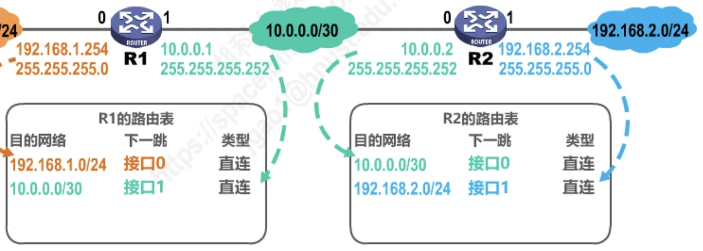
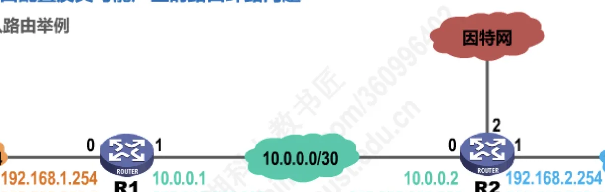
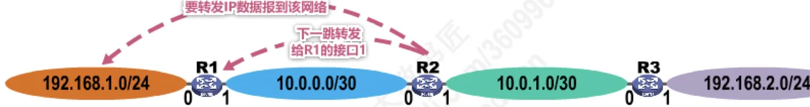
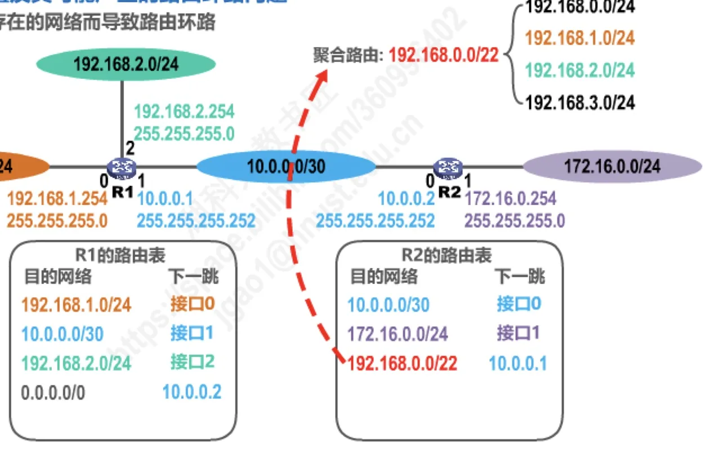
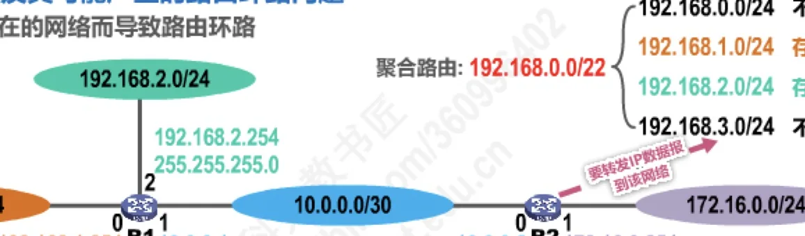
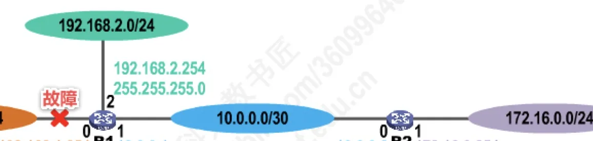

计算机通信与网络 · 第 4 章 网络层
4.5 静态路由配置及其可能产生的路由环路问题
路由表里的条目有两条来源：直连网络由路由器自动得出，其余的要靠人工配置或路由协议学习。这一节讲人工配置的那一类——静态路由，以及它最容易引发的麻烦：路由环路。配置错误、聚合了不存在的网络、网络故障，是三种植得警惕的成因；把它们逐一摆开，也就顺带讲清了默认路由、特定主机路由和黑洞路由这三种特殊的静态路由条目。
1. 什么是静态路由配置
静态路由配置是指用户或网络管理员使用路由器的相关命令给路由器人工配置路由表。它的优点是简单、开销小——不用跑路由协议、不占额外的带宽和处理器资源；缺点也很明确：不能及时适应网络状态（流量、拓扑等）的变化，网络一旦发生变化，必须靠人工修改。因此它一般只在小规模网络中采用。
路由表中的条目按其来源可分为三类：
- 直连网络——路由器接口所在的网络，由路由器自动得出；
- 静态路由——由管理员人工配置；
- 动态路由——由路由选择协议自动学习得到（详见 4.6 节）。
静态路由条目中有三种特殊形态，后面都会用到：默认路由（目的网络为 0.0.0.0，地址掩码为 0.0.0.0）、特定主机路由（目的网络为特定主机的 IP 地址，地址掩码为 255.255.255.255，即 /32）、黑洞路由（下一跳为 null0，即丢弃）。
使用静态路由配置，可能出现以下导致路由环路的错误：
- 配置错误——人工写错了下一跳；
- 聚合了不存在的网络——把没有实际存在的地址块也聚合进了一条路由；
- 网络故障——接口或链路故障使某条路由消失，剩下的路由互相指向对方。
2. 静态路由配置举例
先看一个最简单的两路由器拓扑：R1 的接口 0 连接网络 192.168.1.0/24（接口地址 192.168.1.254/24），接口 1（10.0.0.1/30）与 R2 的接口 0（10.0.0.2/30）相连；R2 的接口 1 连接网络 192.168.2.0/24（接口地址 192.168.2.254/24）。
配置之前，两台路由器的路由表里只有自己直连的网络，因为直连网络条目是自动得出的：
| 路由器 | 目的网络 | 下一跳 | 类型 |
|---|---|---|---|
| R1 | 192.168.1.0/24 | 接口 0 | 直连 |
| R1 | 10.0.0.0/30 | 接口 1 | 直连 |
| R2 | 10.0.0.0/30 | 接口 0 | 直连 |
| R2 | 192.168.2.0/24 | 接口 1 | 直连 |

这样两台路由器都无法把数据报送进对方的网络。要让 R1 能把数据报转发到 192.168.2.0/24，就必须人工加一条静态路由，下一跳填 R2 接口 0 的地址 10.0.0.2；对称地，R2 要加一条到 192.168.1.0/24 的静态路由，下一跳填 R1 接口 1 的地址 10.0.0.1。加上这两条之后，两张表就完整了：
| 路由器 | 目的网络 | 下一跳 | 类型 |
|---|---|---|---|
| R1 | 192.168.1.0/24 | 接口 0 | 直连 |
| R1 | 10.0.0.0/30 | 接口 1 | 直连 |
| R1 | 192.168.2.0/24 | 10.0.0.2 | 静态 |
| R2 | 10.0.0.0/30 | 接口 0 | 直连 |
| R2 | 192.168.2.0/24 | 接口 1 | 直连 |
| R2 | 192.168.1.0/24 | 10.0.0.1 | 静态 |
3. 默认路由
如果 R2 还通过另一个接口接入因特网，R1 要转发去往「包含众多网络的因特网」的数据报该怎么办？逐个网络写静态路由显然不现实。这时用默认路由：目的网络写 0.0.0.0、地址掩码写 0.0.0.0，也就是 0.0.0.0/0，下一跳填 10.0.0.2（R2 的接口 0）。它的含义是「凡是路由表里没有更具体匹配的所有目的网络，都交给这个下一跳」。加上默认路由后，R1 的路由表如下。
| 目的网络 | 下一跳 | 类型 |
|---|---|---|
| 192.168.1.0/24 | 接口 0 | 直连 |
| 10.0.0.0/30 | 接口 1 | 直连 |
| 192.168.2.0/24 | 10.0.0.2 | 静态 |
| 0.0.0.0/0 | 10.0.0.2 | 静态（默认路由） |

对于本例来说，配置了默认路由之后，甚至连 192.168.2.0/24 那条静态路由都可以删除——因为去往 192.168.2.0/24 的分组同样会落进默认路由、同样被交给 10.0.0.2。这也说明默认路由的作用是「兜底」：写一条就能覆盖大量目的网络。
4. 特定主机路由与最长前缀匹配
反过来，如果只想给某一台主机指定一条专门的路径，就用特定主机路由：目的网络写该主机的完整 IP 地址，掩码写 255.255.255.255，也就是 /32。例如在 R1 上配置一条目的网络为 192.168.2.1/32、下一跳为 10.0.0.2 的静态路由，R1 的路由表就变成这样。
| 目的网络 | 下一跳 | 类型 | 备注 |
|---|---|---|---|
| 192.168.1.0/24 | 接口 0 | 直连 | |
| 10.0.0.0/30 | 接口 1 | 直连 | |
| 192.168.2.1/32 | 10.0.0.2 | 静态 | 特定主机路由，网络前缀最长、路由最具体 |
| 0.0.0.0/0 | 10.0.0.2 | 静态 | 默认路由，网络前缀最短、路由最模糊 |
此时若有一个目的地址为 192.168.2.1 的数据报，它既能匹配 /32 的特定主机路由，也能匹配 /0 的默认路由。规则是：网络前缀最长，路由最具体；网络前缀最短，路由最模糊；多条路由可选时，选最长前缀匹配。因此它会走 192.168.2.1/32 这一条。这也正是 4.3.4 节讲过的最长前缀匹配原则在路由表中的体现。
5. 配置错误导致路由环路
把拓扑扩大成三个路由器：R1 接口 0 连接 192.168.1.0/24；R1 与 R2 之间是 10.0.0.0/30（R1 接口 1 为 10.0.0.1，R2 接口 0 为 10.0.0.2）；R2 与 R3 之间是 10.0.1.0/30（R2 接口 1 为 10.0.1.1，R3 接口 0 为 10.0.1.2）；R3 接口 1 连接 192.168.2.0/24。三台路由器上都人工配置了静态路由。
| 路由器 | 目的网络 | 下一跳 | 类型 |
|---|---|---|---|
| R1 | 192.168.1.0/24 | 接口 0 | 直连 |
| R1 | 10.0.0.0/30 | 接口 1 | 直连 |
| R1 | 192.168.2.0/24 | 10.0.0.2 | 静态 |
| R2 | 10.0.0.0/30 | 接口 0 | 直连 |
| R2 | 10.0.1.0/30 | 接口 1 | 直连 |
| R2 | 192.168.1.0/24 | 10.0.1.2（应配置为 10.0.0.1） | 静态 |
| R2 | 192.168.2.0/24 | 10.0.1.2 | 静态 |
| R3 | 10.0.1.0/30 | 接口 0 | 直连 |
| R3 | 192.168.2.0/24 | 接口 1 | 直连 |
| R3 | 192.168.1.0/24 | 10.0.1.1 | 静态 |
问题出在 R2 那一条：去往 192.168.1.0/24 的下一跳本应指向 R1 的接口 1（10.0.0.1），却被错配成了 R3 的接口 0（10.0.1.2）。于是 R2 认为 192.168.1.0/24 要从 R3 走，而 R3 认为 192.168.1.0/24 要从 R2 走（下一跳 10.0.1.1）——两个路由器互相把对方当作下一跳，去往 192.168.1.0/24 的分组就在 R2 与 R3 之间来回转发，形成路由环路。

为了防止 IP 数据报在路由环路中永久兜圈，IP 数据报首部设有生存时间 TTL 字段：IP 数据报进入路由器后，TTL 字段的值减 1；若 TTL 值不等于 0，则被路由器转发，否则被丢弃。环路虽然会形成，但分组不会永远留在网络里。
6. 聚合了不存在的网络导致路由环路
第二种成因更隐蔽——路由本身没写错，但聚合把「不存在」的地址也涵盖了进来。拓扑是：R1 接口 0 连接 192.168.1.0/24，接口 2 连接 192.168.2.0/24，接口 1（10.0.0.1/30）与 R2 的接口 0（10.0.0.2/30）相连；R2 的接口 1 连接 172.16.0.0/24。两台路由器的路由表如下。
| 路由器 | 目的网络 | 下一跳 | 类型 |
|---|---|---|---|
| R1 | 192.168.1.0/24 | 接口 0 | 直连（自动得出） |
| R1 | 10.0.0.0/30 | 接口 1 | 直连（自动得出） |
| R1 | 192.168.2.0/24 | 接口 2 | 直连（自动得出） |
| R1 | 0.0.0.0/0 | 10.0.0.2 | 静态（默认路由，人工配置） |
| R2 | 10.0.0.0/30 | 接口 0 | 直连（自动得出） |
| R2 | 172.16.0.0/24 | 接口 1 | 直连（自动得出） |
| R2 | 192.168.0.0/22 | 10.0.0.1 | 静态（聚合路由，人工配置） |
R2 上那条 192.168.0.0/22 是由 192.168.1.0/24 与 192.168.2.0/24 聚合而成的：把两者的第三个字节写成二进制，192.168.00000001.0 与 192.168.00000010.0 的共同前缀是 22 位，所以聚合网络为 192.168.0.0/22。但一个 /22 地址块包含四个 /24：
聚合路由：192.168.0.0/22
192.168.0.0/24 ← 不存在
192.168.1.0/24 ← 存在
192.168.2.0/24 ← 存在
192.168.3.0/24 ← 不存在于是环路出现了：若有一个分组要发往 192.168.3.0/24（这个网络实际并不存在），R1 在自己的表中找不到匹配条目，只能走默认路由把它交给 R2；R2 一查表，192.168.3.0/24 落在聚合路由 192.168.0.0/22 里，于是按该条目把分组送回 R1（下一跳 10.0.0.1）；R1 又一次交给 R2……分组就在两台路由器之间来回兜圈。

解决办法是给这些不存在的网络配上黑洞路由——下一跳写 null0，意思是「直接丢弃」。在 R2 上增加两条：192.168.3.0/24 → null0 与 192.168.0.0/24 → null0。由于最长前缀匹配，这两个 /24 的具体条目优先于 /22 的聚合路由，去往这两个不存在网络的分组会被 R2 直接丢弃，环路随之消失。这也提示了一条经验：做路由聚合时，要为聚合块中不存在的网络配置黑洞路由。

7. 网络故障导致路由环路
第三种成因是网络故障。仍然用上一节的拓扑与路由表：R1 有指向 R2 的默认路由 0.0.0.0/0，R2 有指向 R1 的聚合路由 192.168.0.0/22，另外 R2 上已经配好了两条黑洞路由。
现在 R1 连接 192.168.2.0/24 的接口发生故障。直连网络条目是路由器自动得出的，接口一旦失效，这条路由条目也就自动删除——R1 的路由表中不再有 192.168.2.0/24。

这一删就出了新问题：此时去往 192.168.2.0/24 的分组在 R1 上只能匹配默认路由 0.0.0.0/0，被交给 R2；而 R2 的聚合路由 192.168.0.0/22 恰恰覆盖 192.168.2.0/24，于是又被送回 R1——R1 再交给 R2……又形成环路。
为此，R1 上应预先配置一条指向 192.168.2.0/24 的黑洞路由（下一跳 null0）。平时它不生效，因为直连路由更「具体」；接口故障、直连路由条目被自动删除之后，这条黑洞路由就自动生效，去往 192.168.2.0/24 的分组被 R1 直接丢弃，不再被默认路由引到 R2 去绕圈。
本节小结
- 静态路由配置是管理员用命令人工给路由器配置路由表，简单、开销小，但不能及时适应网络状态变化，一般只用于小规模网络。
- 路由条目按来源分三类：直连网络（自动得出）、静态路由（人工配置）、动态路由（路由选择协议学习）。
- 三种特殊静态路由条目：默认路由（0.0.0.0/0）用于兜底，转发所有无更具体匹配的分组；特定主机路由（掩码 255.255.255.255，即 /32）为单台主机指定路径；黑洞路由（下一跳 null0）用于丢弃分组。
- 多条路由可选时按最长前缀匹配：网络前缀越长、路由越具体，越优先。
- 静态路由可能引发路由环路的三种情况：配置错误（下一跳写错，两台路由器互指）、聚合了不存在的网络（聚合块中不存在的地址被兜回）、网络故障（直连路由自动删除后由默认路由与聚合路由构成环路）。
- 对应的防范手段：写错就改正；聚合时为不存在的网络配置 null0 黑洞路由；故障场景下预先配置黑洞路由，使其在直连路由失效后自动生效。此外 IP 数据报首部的 TTL 字段会在每经过一台路由器时减 1，为 0 即被丢弃，可防止分组在环路中永久兜圈。